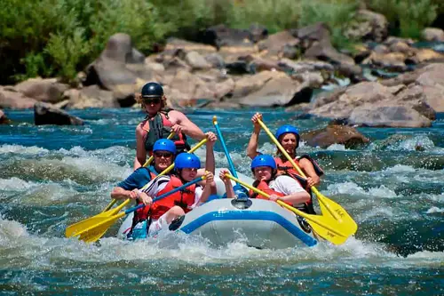
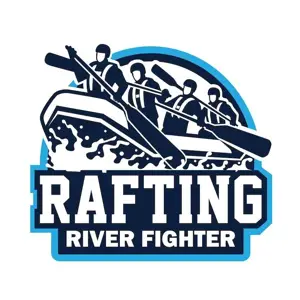
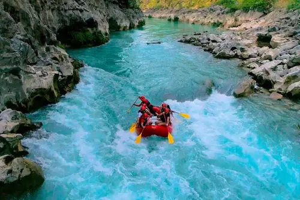
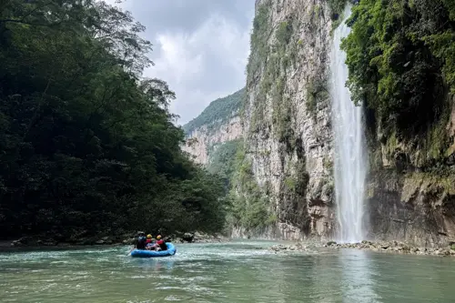

Copalita Expedition
A full-day trip through the Copalita river in Oaxaca with class III and IV rapids, jungle scenery, and a riverside lunch. Ideal for adventurous rafters ages 14 and up.

Choose the river adventure that fits your style and skill level.

A full-day trip through the Copalita river in Oaxaca with class III and IV rapids, jungle scenery, and a riverside lunch. Ideal for adventurous rafters ages 14 and up.

Two days paddling the turquoise waters of the Huasteca Potosina, jumping waterfalls and camping by the river. Includes meals, tents, and all gear.

A three-day expedition inside the spectacular La Venta canyon in Chiapas, with caves, ancient trails, and class IV rapids. For experienced rafters only.
| Trip | Duration | Difficulty | Min. Age | Price |
|---|---|---|---|---|
| Jalcomulco Family Float | Half day | Class II | 8 | $45 |
| Copalita Expedition | 1 day | Class III-IV | 14 | $90 |
| Huasteca Waterfalls | 2 days | Class III | 12 | $220 |
| La Venta Canyon | 3 days | Class IV | 18 | $450 |